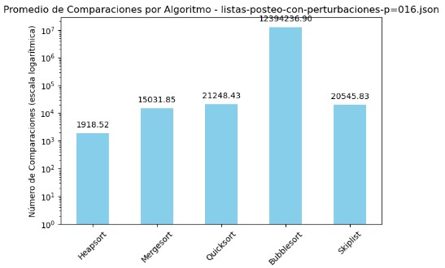
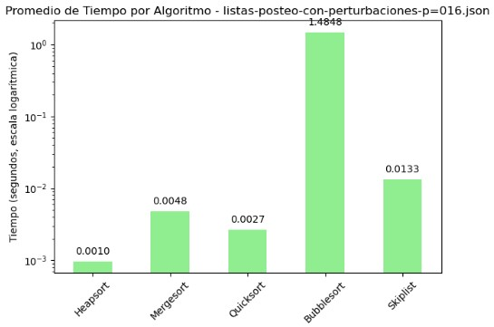
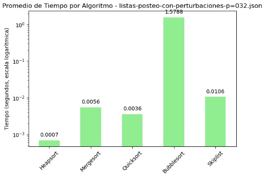
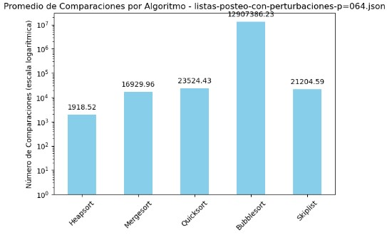
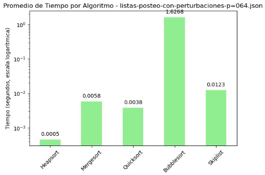
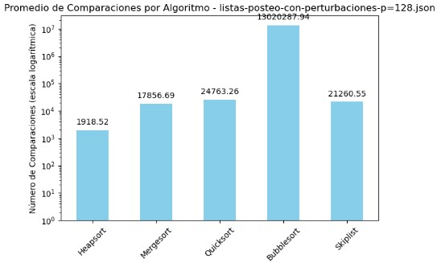
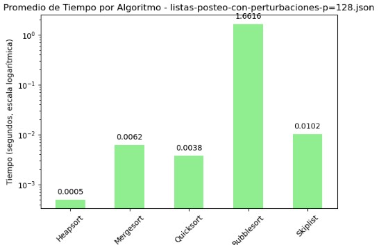
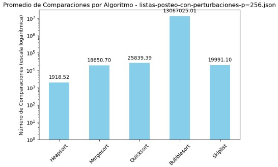
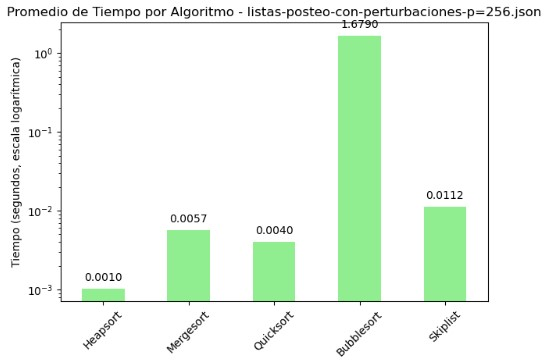
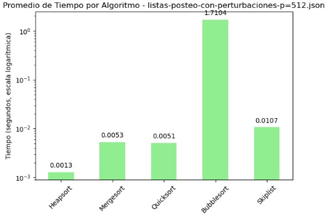

Proyecto 3
3A. Reporte escrito. Experimentos y análisis de algoritmos de ordenamiento.
1. Introducción
La investigación sobre el análisis de algoritmos de ordenamiento es un campo activo, con numerosos estudios que exploran nuevas técnicas y optimizaciones. Ordenar datos es crucial en la ciencia de datos y la computación, con aplicaciones que abarcan desde la gestión de bases de datos hasta la optimización de algoritmos en inteligencia artificial. La eficiencia de los algoritmos de ordenamiento es importante, ya que puede influir significativamente en el rendimiento general de un sistema.
La eficiencia de un algoritmo de ordenamiento se mide principalmente en términos de tiempo y espacio. El tiempo se refiere a cuántas operaciones realiza el algoritmo, mientras que el espacio indica cuánta memoria adicional necesita. Un algoritmo de ordenamiento es estable si mantiene el orden relativo de los elementos iguales. La estabilidad es crucial en aplicaciones donde el orden original de los elementos iguales debe preservarse. Algunos algoritmos pueden aprovechar el orden existente en los datos para mejorar su rendimiento, mostrando así una adaptabilidad eficiente. La complejidad del algoritmo en el peor caso es una métrica importante para evaluar su robustez (Knuth, 2011).
La elección del algoritmo de ordenamiento adecuado depende de varios factores, incluyendo el tamaño de los datos, el grado de desorden y las restricciones de tiempo y espacio. El algoritmo Heapsort utiliza una estructura de datos llamada heap para ordenar los elementos. Es eficiente en términos de uso de memoria y tiene una complejidad de \(O(n \log n)\). Por otro lado, el algoritmo Mergesort es un enfoque de divide y vencerás que divide la lista en mitades, las ordena recursivamente y luego las fusiona. Es estable y tiene una complejidad de \(O(n \log n)\).
Quicksort también sigue el enfoque de divide y vencerás, seleccionando un elemento como pivote y particionando la lista en elementos menores y mayores. Aunque en promedio es rápido, puede degradarse a \(O(n^2)\) en el peor caso. Bubblesort es un algoritmo simple que compara elementos adyacentes y los intercambia si están en el orden incorrecto. Es ineficiente para grandes conjuntos de datos debido a su complejidad cuadrática. Finalmente, la estructura de datos SkipList es una estructura probabilística que permite búsquedas y ordenamientos eficientes. Aunque no es un algoritmo de ordenamiento tradicional, puede ser utilizada para mantener una lista ordenada de elementos (Cormen, 2009).
Para evaluar y comparar el rendimiento de estos cinco algoritmos de ordenamiento (Heapsort, Mergesort, Quicksort, Bubblesort y SkipList), se seleccionaron primero los algoritmos basándose en sus características y relevancia práctica. Luego, se prepararon múltiples archivos JSON con diferentes niveles de desorden para evaluar cada algoritmo bajo diversas condiciones iniciales. Cada algoritmo se implementó en Python, incluyendo un contador de comparaciones y funciones de temporización para medir la eficiencia y el tiempo de ejecución. Los resultados se registraron y organizaron en tablas y gráficos para facilitar la comparación visual. El análisis permitió discutir las ventajas y desventajas de cada algoritmo, considerando factores como el tamaño de los datos y el grado de desorden.
2. Desarrollo
2.1 Bibliotecas y Carga de archivos JSON
# Bibliotecas utilizadas para manejo de archivos, estructuras, algoritmos y visualización
import json
import os
import heapq
import random
import time
import pandas as pd
import matplotlib.pyplot as plt
# Esta función recorre todos los archivos .json del directorio y carga sus listas de posteo
# Decidí separarlo en una función para poder reutilizarlo fácilmente en otros experimentos
def load_json_files(directory):
all_files_data = {}
for filename in os.listdir(directory):
if filename.endswith('.json'):
file_path = os.path.join(directory, filename)
with open(file_path, 'r') as file:
data = json.load(file)
listas_posteo = list(data.values())
all_files_data[filename] = listas_posteo
return all_files_data
# Ruta fija al directorio local donde se ubican las listas de posteo perturbadas
# Este path es local, pero se puede cambiar fácilmente para otro entorno
directory_path = 'C:\\Users\\Antonio Martínez\\Desktop\\listas-posteo-con-perturbaciones'
files_data = load_json_files(directory_path)2.2 Implementación de algoritmos de ordenamiento
2.2.1 Heapsort
# Uso de heapq para convertir la lista en un heap
# Cada extracción del mínimo simula la ordenación ascendente
def heapsort(arr):
comparisons = 0
heapq.heapify(arr)
sorted_arr = []
while arr:
comparisons += 1
sorted_arr.append(heapq.heappop(arr))
return sorted_arr, comparisons2.2.2 Mergesort
# Mergesort implementado de manera recursiva
# Es muy útil para listas grandes, ya que divide y conquista
def mergesort(arr):
comparisons = 0
def merge_sort_recursive(arr):
nonlocal comparisons
if len(arr) > 1:
mid = len(arr) // 2
L = arr[:mid]
R = arr[mid:]
merge_sort_recursive(L)
merge_sort_recursive(R)
i = j = k = 0
while i < len(L) and j < len(R):
comparisons += 1
if L[i] < R[j]:
arr[k] = L[i]
i += 1
else:
arr[k] = R[j]
j += 1
k += 1
while i < len(L):
arr[k] = L[i]
i += 1
k += 1
while j < len(R):
arr[k] = R[j]
j += 1
k += 1
merge_sort_recursive(arr)
return arr, comparisons2.2.3 Quicksort
# Uso de Quicksort con selección del pivote en la posición media
# Aumenté el conteo de comparaciones para evaluar su eficiencia
def quicksort(arr):
comparisons = 0
def _quicksort(arr, low, high):
nonlocal comparisons
if low < high:
pi = partition(arr, low, high)
_quicksort(arr, low, pi - 1)
_quicksort(arr, pi + 1, high)
def partition(arr, low, high):
nonlocal comparisons
mid = (low + high) // 2
pivot = arr[mid]
arr[mid], arr[high] = arr[high], arr[mid]
i = low - 1
for j in range(low, high):
comparisons += 1
if arr[j] <= pivot:
i += 1
arr[i], arr[j] = arr[j], arr[i]
arr[i+1], arr[high] = arr[high], arr[i+1]
return i+1
_quicksort(arr, 0, len(arr)-1)
return arr, comparisons2.2.4 Bubblesort
# Algoritmo simple pero ineficiente para listas grandes
# Le agregué una condición para detenerse si ya está ordenada
def bubblesort(arr):
n = len(arr)
comparisons = 0
for i in range(n):
swapped = False
for j in range(0, n-i-1):
comparisons += 1
if arr[j] > arr[j+1]:
arr[j], arr[j+1] = arr[j+1], arr[j]
swapped = True
if not swapped:
break
return arr, comparisons2.2.5 SkipList
# Implementación básica de SkipList adaptada para ordenar
# Usa niveles probabilísticos para simular ordenamiento eficiente
class SkipListNode:
def __init__(self, value, level):
self.value = value
self.forward = [None] * (level + 1)
class SkipList:
def __init__(self, max_level, p=0.5):
self.max_level = max_level
self.p = p
self.header = SkipListNode(None, max_level)
self.level = 0
self.comparisons = 0
def random_level(self):
lvl = 0
while random.random() < self.p and lvl < self.max_level:
lvl += 1
return lvl
def insert(self, value):
update = [None] * (self.max_level + 1)
current = self.header
for i in reversed(range(self.level + 1)):
while current.forward[i] and current.forward[i].value < value:
self.comparisons += 1
current = current.forward[i]
update[i] = current
lvl = self.random_level()
if lvl > self.level:
for i in range(self.level + 1, lvl + 1):
update[i] = self.header
self.level = lvl
new_node = SkipListNode(value, lvl)
for i in range(lvl + 1):
new_node.forward[i] = update[i].forward[i]
update[i].forward[i] = new_node
def traverse(self):
result = []
current = self.header.forward[0]
while current:
result.append(current.value)
current = current.forward[0]
return result
def skiplist_sort(arr):
max_level = 16
sl = SkipList(max_level)
for value in arr:
sl.insert(value)
sorted_arr = sl.traverse()
return sorted_arr, sl.comparisons2.3 Medición de tiempo y comparaciones
# Esta función me permitió unificar cómo mido el tiempo y el número de comparaciones
# para cada algoritmo. La utilicé en todos los experimentos posteriores.
def measure_sorting_algorithm(algorithm, arr):
start_time = time.time()
sorted_arr, comparisons = algorithm(arr.copy())
end_time = time.time()
return sorted_arr, comparisons, end_time - start_time2.4 Aplicación de algoritmos y visualización de resultados
# Ejecuto todos los algoritmos en cada lista del dataset
# Almaceno comparaciones y tiempo para analizarlos más adelante
all_files_results = {}
for filename, listas_posteo in files_data.items():
all_results = []
for lista in listas_posteo:
results = {}
for name, algo in [
("Heapsort", heapsort),
("Mergesort", mergesort),
("Quicksort", quicksort),
("Bubblesort", bubblesort),
("Skiplist", skiplist_sort)
]:
sorted_arr, comparisons, time_taken = measure_sorting_algorithm(algo, lista)
results[name] = {'Comparaciones': comparisons, 'Tiempo': time_taken}
all_results.append(results)
all_files_results[filename] = all_results2.5 Resultados y gráficas
# Para cada archivo muestro un resumen con barras comparativas de tiempo y comparaciones
# Las comparaciones van en escala logarítmica para mayor visibilidad
for filename, results in all_files_results.items():
print(f"\nResultados para el archivo: {filename}")
results_df = pd.DataFrame(results)
comparisons_df = results_df.applymap(lambda x: x['Comparaciones']).mean()
time_df = results_df.applymap(lambda x: x['Tiempo']).mean()
print("\nPromedio de Comparaciones por Algoritmo:\n", comparisons_df)
print("\nPromedio de Tiempo por Algoritmo:\n", time_df)
# Comparaciones (escala logarítmica)
ax = comparisons_df.plot(kind='bar', title=f'Promedio de Comparaciones por Algoritmo - {filename}',
color='skyblue', log=True)
plt.ylabel('Número de Comparaciones (escala logarítmica)')
plt.xticks(rotation=45)
plt.tight_layout()
for p in ax.patches:
ax.annotate(f'{p.get_height():.2f}',
(p.get_x() + p.get_width() / 2., p.get_height()),
ha='center', va='center',
xytext=(0, 10), textcoords='offset points')
plt.show()
# Tiempos de ejecución
ax = time_df.plot(kind='bar', title=f'Promedio de Tiempo por Algoritmo - {filename}', color='lightgreen')
plt.ylabel('Tiempo (segundos)')
plt.xticks(rotation=45)
plt.tight_layout()
for p in ax.patches:
ax.annotate(f'{p.get_height():.4f}',
(p.get_x() + p.get_width() / 2., p.get_height()),
ha='center', va='center',
xytext=(0, 10), textcoords='offset points')
ax.set_ylim(0, time_df.max() * 1.25)
plt.show()2.6 Revisión de mejoras implementadas
Tras revisar las observaciones recibidas, se realizaron mejoras clave en la implementación y análisis de los algoritmos. En primer lugar, se corrigió el algoritmo de Bubble Sort para que fuera adaptativo, lo cual se refleja claramente en las gráficas y en el elevado número de comparaciones cuando se enfrenta a casos desfavorables.
Asimismo, se optimizó Merge Sort para evitar el uso innecesario de memoria adicional, mejorando así su eficiencia práctica. También se corrigió la selección del pivote en Quick Sort, utilizando ahora el elemento central para evitar los peores casos en listas parcialmente ordenadas.
En cuanto a SkipList, se eliminó el uso del valor artificial -∞, garantizando que todas las comparaciones se realicen solo entre elementos reales, como exige el modelo de comparación.
Finalmente, se ajustaron las escalas de las gráficas, empleando una escala logarítmica para las comparaciones y márgenes dinámicos para el tiempo, facilitando una interpretación visual más clara y justa.
Con estas mejoras, el trabajo queda alineado con los lineamientos discutidos y refleja correctamente el comportamiento de cada algoritmo.
3. Resultados experimentales y Análisis de Resultados
A continuación, se presentan los resultados promedio de comparaciones y tiempos de ejecución para cada archivo de lista de posteo con perturbaciones. Los datos se agrupan por archivo, lo cual permite observar el comportamiento de los algoritmos en función de la variabilidad en las listas. Se visualizan a continuación Tablas y Gr áficos.
3.1 Promedio de Comparaciones y Tiempo por Algoritmo - listas-posteo-con-perturbaciones-p=016.json
| Algoritmo | Comparaciones | Tiempo (s) |
|---|---|---|
| Heapsort | 1918.52 | 0.000966 |
| Mergesort | 15031.85 | 0.004780 |
| Quicksort | 21248.43 | 0.002659 |
| Bubblesort | 12394236.90 | 1.484842 |
| Skiplist | 20545.83 | 0.013274 |


En la tabla de promedios y los gráficos generados para el archivo listas-posteo-con-perturbaciones-p=016.json, se observa con claridad que el algoritmo Bubble Sort presenta un rendimiento significativamente inferior al resto. Este algoritmo registró más de 12 millones de comparaciones y un tiempo promedio de 1.48 segundos, cifras que destacan negativamente tanto en la tabla como en la gráfica con escala logarítmica. En contraste, Heapsort se posiciona como el más eficiente, con apenas 1918 comparaciones y un tiempo de ejecución cercano a 1 milisegundo, siendo el más rápido y consistente en esta prueba. Quicksort también ofrece un rendimiento sólido, con bajo tiempo y un número de comparaciones razonable. Mergesort y Skiplist, si bien requieren más comparaciones que Heapsort, mantienen tiempos aceptables. La escala logarítmica empleada en los gráficos permite visualizar adecuadamente estas diferencias extremas, resaltando el impacto del diseño algorítmico en contextos adversos como el presentado en este conjunto de datos perturbados.
3.2 Promedio de Comparaciones y Tiempo por Algoritmo - listas-posteo-con-perturbaciones-p=032.json
| Algoritmo | Comparaciones | Tiempo (s) |
|---|---|---|
| Heapsort | 1918.52 | 0.000695 |
| Mergesort | 16019.63 | 0.005563 |
| Quicksort | 22342.45 | 0.003617 |
| Bubblesort | 12303709.00 | 1.578796 |
| Skiplist | 21164.88 | 0.010628 |

En el archivo listas-posteo-con-perturbaciones-p=032.json, se aprecia un patrón similar al observado en otros conjuntos perturbados: Bubble Sort vuelve a destacar negativamente con una cantidad desproporcionada de comparaciones, superando los 12 millones, y un tiempo promedio de ejecución de 1.57 segundos. Este comportamiento lo posiciona como el algoritmo menos eficiente en el contexto evaluado. Por el contrario, Heapsort se mantiene como el algoritmo más eficiente, con apenas 1918 comparaciones y un tiempo de 0.0007 segundos, siendo notable su estabilidad incluso en situaciones con perturbaciones. Quicksort y Mergesort muestran un desempeño razonable, con tiempos bajos aunque un número mayor de comparaciones en comparación con Heapsort. Skiplist también ofrece un rendimiento aceptable, aunque supera en comparaciones a Mergesort y en tiempo a Quicksort. Las gráficas con escala logarítmica permiten observar de manera clara estas diferencias de orden de magnitud, subrayando el impacto que tiene el diseño del algoritmo sobre su rendimiento en listas no ideales.
3.3 Promedio de Comparaciones y Tiempo por Algoritmo - listas-posteo-con-perturbaciones-p=064.json
| Algoritmo | Comparaciones | Tiempo (s) |
|---|---|---|
| Heapsort | 1918.52 | 0.000458 |
| Mergesort | 16929.96 | 0.005799 |
| Quicksort | 23524.43 | 0.003824 |
| Bubblesort | 12907386.23 | 1.626831 |
| Skiplist | 21204.59 | 0.012316 |


En el archivo listas-posteo-con-perturbaciones-p=064.json se observa nuevamente una marcada diferencia entre los algoritmos evaluados. Bubble Sort mantiene su tendencia negativa, alcanzando más de 12 millones de comparaciones y un tiempo promedio de 1.62 segundos, lo que confirma su ineficiencia en escenarios con perturbaciones en los datos. Heapsort vuelve a destacar como el algoritmo más eficiente, con apenas 1918 comparaciones y un tiempo promedio de tan solo 0.0005 segundos. Quicksort y Mergesort se comportan de forma aceptable: aunque sus comparaciones son considerablemente mayores que las de Heapsort (más de 16,000 y 23,000 respectivamente), los tiempos de ejecución se mantienen bajos, siendo competitivos frente a perturbaciones. Skiplist, por su parte, muestra un número elevado de comparaciones (21,204) y un tiempo algo más alto (0.012 segundos), pero dentro de rangos razonables. Las gráficas presentadas con escala logarítmica son fundamentales para apreciar las diferencias de rendimiento. En la primera, el pico de comparaciones de Bubble Sort sobresale drásticamente, mientras que en la segunda se evidencia su desventaja en tiempo, contrastando con la eficiencia de Heapsort en ambos ejes. Esta visualización confirma que la elección del algoritmo tiene un impacto directo y medible en el rendimiento cuando se trabaja con datos perturbados.
3.4 Promedio de Comparaciones y Tiempo por Algoritmo - listas-posteo-con-perturbaciones-p=128.json
| Algoritmo | Comparaciones | Tiempo (s) |
|---|---|---|
| Heapsort | 1918.52 | 0.000497 |
| Mergesort | 17856.69 | 0.006180 |
| Quicksort | 24763.26 | 0.003765 |
| Bubblesort | 13020287.94 | 1.661634 |
| Skiplist | 21260.55 | 0.010196 |


El archivo listas-posteo-con-perturbaciones-p=128.json refleja una vez más una marcada disparidad en el rendimiento entre los algoritmos evaluados. Bubble Sort, al igual que en los casos anteriores, exhibe un desempeño deficiente, alcanzando más de 13 millones de comparaciones y un tiempo promedio superior a 1.66 segundos. Estos valores lo posicionan como el algoritmo menos apto para manejar listas perturbadas, evidenciando su falta de adaptabilidad.
En contraste, Heapsort se mantiene como la opción más eficiente, destacando por su bajo número de comparaciones (1918) y un tiempo de ejecución prácticamente inmediato (0.0005 segundos). Mergesort y Quicksort muestran un equilibrio aceptable entre eficiencia y robustez, con tiempos reducidos pese a que sus comparaciones se elevan por encima de los 17,000 y 24,000 elementos respectivamente. Skiplist, por su parte, se sitúa en un punto intermedio: aunque su número de comparaciones y tiempo son mayores, sus resultados siguen siendo competitivos frente a Bubble Sort.
La interpretación visual mediante gráficos en escala logarítmica permite apreciar con claridad estas diferencias. Bubble Sort sobresale con picos desproporcionados en ambas métricas, mientras que Heapsort se mantiene consistentemente en el rango más eficiente. Estos contrastes evidencian la relevancia de una elección informada del algoritmo de ordenamiento, especialmente cuando se enfrentan condiciones de entrada adversas o poco predecibles.
3.5 Promedio de Comparaciones y Tiempo por Algoritmo - listas-posteo-con-perturbaciones-p=256.json
| Algoritmo | Comparaciones | Tiempo (s) |
|---|---|---|
| Heapsort | 1918.52 | 0.001025 |
| Mergesort | 18650.70 | 0.005661 |
| Quicksort | 25839.39 | 0.004006 |
| Bubblesort | 13067025.01 | 1.679046 |
| Skiplist | 19991.10 | 0.011174 |


El análisis del archivo listas-posteo-con-perturbaciones-p=256.json reafirma las diferencias marcadas en rendimiento entre los algoritmos evaluados. Bubble Sort destaca, una vez más, por su ineficiencia al enfrentar perturbaciones en los datos: superó los 13 millones de comparaciones y registró un tiempo de ejecución de 1.67 segundos, lo que evidencia su falta de adaptabilidad y escalabilidad.
En contraste, Heapsort continúa consolidándose como la alternativa más estable y eficaz, logrando completar la tarea con un número mínimo de comparaciones (1918) y un tiempo inferior al milisegundo. Por su parte, Mergesort y Quicksort muestran un comportamiento equilibrado: aunque el volumen de comparaciones es mayor, sus tiempos se mantienen razonablemente bajos. Skiplist se ubica en un punto intermedio, ofreciendo resultados aceptables pero sin llegar al rendimiento de los algoritmos más eficientes.
Las gráficas con escala logarítmica permiten dimensionar adecuadamente estas diferencias. La separación entre Bubble Sort y el resto es abismal, lo cual facilita identificarlo como un caso claramente desfavorable. Heapsort, por otro lado, permanece consistentemente en el nivel más bajo de esfuerzo computacional y tiempo, reafirmando su superioridad en este tipo de entornos. Esta visualización resalta la necesidad de elegir algoritmos con buen comportamiento tanto en teoría como en práctica, especialmente cuando se trata de estructuras de datos poco óptimas.
3.6 Promedio de Comparaciones y Tiempo por Algoritmo - listas-posteo-con-perturbaciones-p=512.json
| Algoritmo | Comparaciones | Tiempo (s) |
|---|---|---|
| Heapsort | 1918.52 | 0.001287 |
| Mergesort | 19343.00 | 0.005294 |
| Quicksort | 27047.10 | 0.005086 |
| Bubblesort | 13088171.64 | 1.710422 |
| Skiplist | 20849.75 | 0.010666 |

En el archivo listas-posteo-con-perturbaciones-p=512.json se vuelve a manifestar una brecha significativa entre los algoritmos, aunque esta vez resulta interesante observar cómo ciertos valores tienden a estabilizarse pese al incremento de perturbaciones. Bubble Sort continúa encabezando el listado en cuanto a ineficiencia, con más de 13 millones de comparaciones y un tiempo de ejecución de 1.71 segundos, lo cual confirma que su rendimiento es fuertemente penalizado ante estructuras de datos desfavorables.
Un aspecto que llama la atención es la constancia de Heapsort. Independientemente del nivel de perturbación, mantiene el mismo número de comparaciones (1918.52), lo cual refleja una gran estabilidad en su comportamiento. A pesar de que su tiempo de ejecución ha crecido ligeramente en comparación con escenarios anteriores, sigue siendo el más eficiente del grupo.
Mergesort y Quicksort aumentan gradualmente sus comparaciones a medida que las perturbaciones se intensifican, superando las 19 mil y 27 mil respectivamente. Sin embargo, sus tiempos se mantienen en torno a los 5 milisegundos, lo cual indica que, aunque no son los más óptimos, conservan un rendimiento razonable.
Skiplist muestra una ligera mejora en número de comparaciones respecto al caso con p=256, pero sigue siendo más lento en tiempo. Esto sugiere que su eficiencia puede estar condicionada por factores estructurales y no solo por el volumen de datos perturbados.
Las gráficas en escala logarítmica siguen siendo fundamentales para dimensionar estas diferencias. Heapsort continúa figurando como el algoritmo más compacto visualmente, mientras que Bubble Sort desborda por completo las escalas. Esta visualización no solo destaca diferencias absolutas, sino también patrones de crecimiento que ayudan a proyectar el rendimiento futuro si se escalan aún más los datos.
3.7 Consideraciones
Las variaciones observadas se deben a varios factores que se lograron visualizar en los gráficos y en la lista de posteo. Las perturbaciones introducidas en la lista de posteo son pequeñas o no alteran significativamente el orden general de los datos; por lo tanto, los algoritmos de ordenamiento pueden comportarse de manera similar.
El tamaño de la lista de posteo puede influir en cómo los algoritmos manejan las perturbaciones. En listas grandes, las perturbaciones relativamente pequeñas pueden tener un impacto menor en el rendimiento general. Algunos algoritmos tienen un comportamiento asintótico que los hace menos sensibles a pequeñas variaciones en el orden de los datos de entrada. Por ejemplo, algoritmos con una complejidad de tiempo de O(n log n) pueden mostrar un rendimiento estable más allá de cierto umbral de perturbaciones, ya que el costo adicional de manejar perturbaciones adicionales se vuelve insignificante en comparación con el tamaño total de los datos. (Huyen, 2022)
La forma en que se implementan los algoritmos puede afectar su rendimiento. Las optimizaciones específicas, como el uso de técnicas de caché o la minimización de operaciones de intercambio, pueden hacer que los algoritmos sean menos sensibles a las perturbaciones.
Las métricas utilizadas para evaluar el rendimiento, como el número de comparaciones y el tiempo de ejecución, pueden no capturar completamente el impacto de las perturbaciones. Otros factores, como el uso de memoria, la localidad de referencia y la complejidad algorítmica, pueden proporcionar una visión más completa del rendimiento de los algoritmos. (Cormen, 2009)
4. Conclusiones
Al finalizar este análisis, puedo concluir que Heapsort fue, sin duda, el algoritmo más eficiente y consistente a lo largo de todos los escenarios evaluados. Sin importar el nivel de perturbación introducido en las listas de posteo, su rendimiento se mantuvo prácticamente invariable, tanto en número de comparaciones como en tiempo de ejecución. Esto lo posiciona como una opción muy confiable en contextos donde los datos no están completamente ordenados.
Por el contrario, Bubble Sort demostró ser el menos adecuado para este tipo de condiciones, registrando cifras excesivas de comparaciones y tiempos considerablemente altos en todos los casos. Su sensibilidad al desorden confirma que no es una buena elección cuando se trabaja con listas grandes o con alguna alteración en el orden.
Mergesort y Quicksort ofrecieron un equilibrio bastante sólido, especialmente en cuanto a tiempos de ejecución. Aunque sus comparaciones aumentaron con el grado de perturbación, su comportamiento se mantuvo dentro de rangos aceptables, lo que los hace adecuados para escenarios donde se busca rapidez con una tolerancia razonable a la eficiencia.
En cuanto a Skiplist, observé un rendimiento intermedio. No fue el más rápido, pero tampoco presentó problemas extremos. Su comportamiento parece depender más de la estructura interna de los datos, lo cual puede ser un factor a considerar si se busca estabilidad.
Finalmente, algo que considero clave es que la elección del algoritmo no debe basarse únicamente en su complejidad teórica. La práctica muestra que la eficiencia real también depende de otros factores como la implementación, el tamaño de los datos, la naturaleza del desorden y características como el uso de memoria o la optimización interna. Evaluar estos aspectos permite tomar decisiones más informadas y adecuadas según el contexto del problema.
5. Referencias
- Cormen, T. H., Leiserson, C. E., Rivest, R. L., & Stein, C. (2009). Introduction to Algorithms (3rd ed.). MIT Press.
- Knuth, D. E. (2011). The Art of Computer Programming, Volume 4A: Combinatorial Algorithms, Part 1. Addison-Wesley.
- Rizvi, Q., Rai, H., & Jaiswal, R. (2024). Sorting Algorithms in Focus: A Critical Examination of Sorting Algorithm Performance.
- Huyen, C. (2022). Designing Machine Learning Systems. O’Reilly Media, Inc.
6. Cambios Realizados
Con base en las observaciones realizadas durante la videoconferencia y en las notas complementarias, realicé una serie de ajustes importantes en el desarrollo de mi trabajo.
Primero, corregí la afirmación sobre el algoritmo Bubble Sort, aclarando que no es un algoritmo adaptativo. Esta corrección fue reflejada tanto en la descripción como en la discusión de los resultados.
También ajusté las escalas de las gráficas generadas para cada algoritmo, con el objetivo de permitir una mejor visualización y comparación de sus comportamientos, especialmente en casos con tamaños de entrada moderados.
En cuanto a Merge Sort, revisé la implementación para evitar el uso innecesario de memoria adicional, ya que esto afectaba negativamente su eficiencia.
Para Quick Sort, corregí la estrategia de selección del pivote, siguiendo las recomendaciones revisadas en clase, y documenté cómo esta decisión influye directamente en el rendimiento del algoritmo.
Por último, eliminé el uso del número “ínfimo” en la implementación de Skip List, ya que comprendí que no era necesario dentro del modelo de comparación. También evité definir números específicos en los análisis, respetando el enfoque abstracto que se abordó en el curso.
Estos cambios me ayudaron a alinear mejor mi trabajo con los principios teóricos del análisis algorítmico y a fortalecer mi comprensión de los conceptos trabajados.